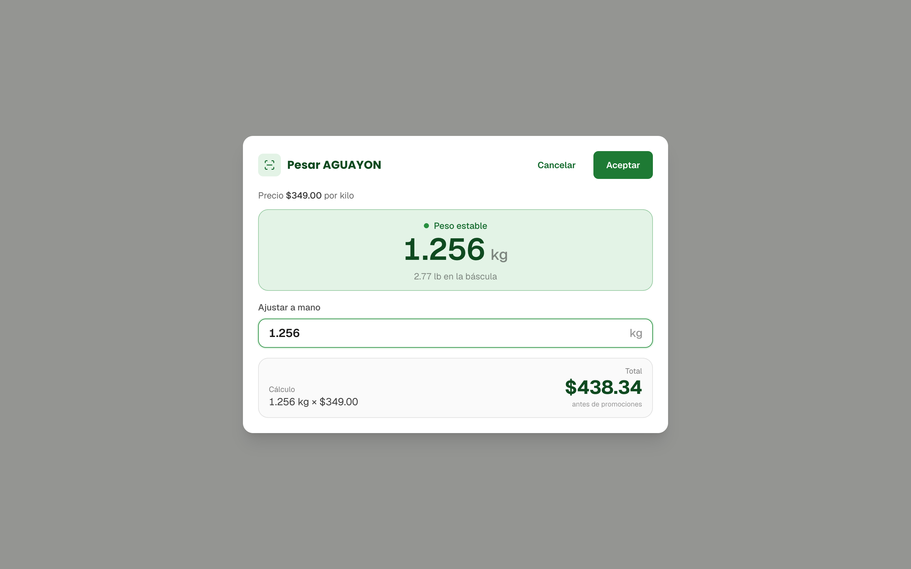
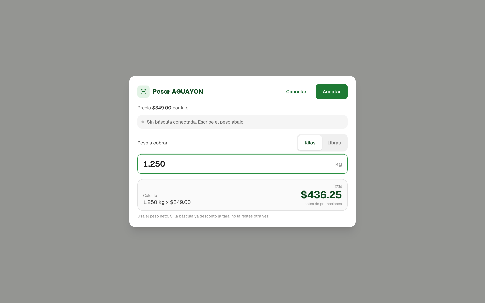
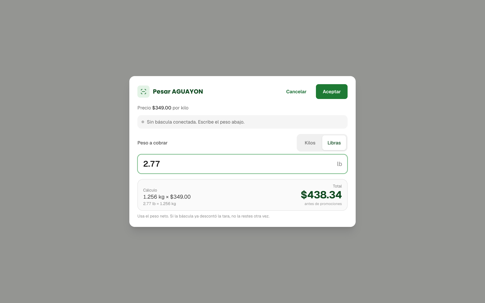
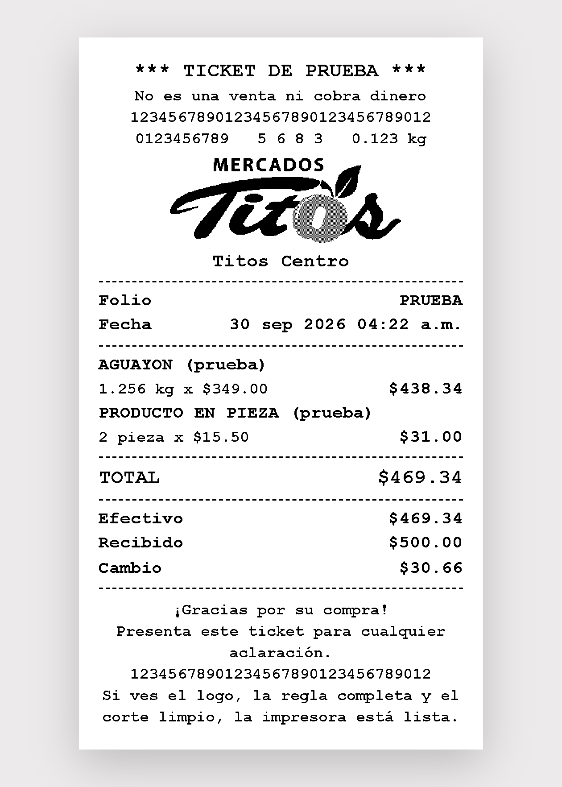

Siempre en kilos
La báscula reporta libras y el sistema las convierte solo: 2.77 lb son 1.256 kg. El cobro y el ticket siempre van en kilos.
Cinco puntos aplicados. El de fondo: la báscula manda libras y el sistema cobra siempre en kilos, con el peso a la vista y listo para aceptar. Junto a eso, la pantalla de pesado se simplificó y el ticket térmico ya lleva el logo de Mercados Titos, con un ticket de prueba para revisar la impresora.
Todos quedaron aplicados sobre el sistema. Abajo el resumen de cada uno; más adelante los detallamos con pantallas.
La báscula reporta libras y el sistema las convierte solo: 2.77 lb son 1.256 kg. El cobro y el ticket siempre van en kilos.
Al elegir un producto que se vende por kilo, el peso aparece en grande y avisa cuando ya es estable. Solo queda aceptar.
Sin X ni barra de desplazamiento, con Cancelar y Aceptar arriba, botones grandes para pantalla táctil y Enter para aceptar.
El ticket térmico lleva el logo de Mercados Titos en blanco y negro, ajustado al papel de 80 mm de la impresora de la caja.
Un botón en Equipos de caja imprime un ticket de prueba, sin crear ventas, para revisar logo, bordes y corte.
La báscula de la caja trabaja en libras y los productos se venden por kilo. Esa conversión ya no la hace nadie a mano.
Lo que pasaba
El cajero tenía que copiar el peso del visor al sistema y elegir la unidad. Con libras de por medio, la conversión mental a kilos era una fuente de errores en cada pesada.
Lo que pasa ahora
La báscula manda el peso y el sistema lo convierte a kilos. Cuando el peso se estabiliza, solo se pulsa Aceptar; el total se calcula al instante con el precio por kilo.
Si no hay báscula, el peso se escribe a mano en kilos o libras y también se convierte.



Sea cual sea la unidad con la que se capture, la venta, el total y el ticket llevan kilos con tres decimales.
Una libra equivale a 0.4536 kg; el peso convertido se redondea al gramo para que el total sea el mismo en la pantalla y en el ticket.
Con báscula, no se puede aceptar mientras el peso todavía se mueve, salvo que el cajero lo ajuste a mano.
El pesado se repite decenas de veces al día, sobre todo en carnicería. Cada clic de más se nota.
Ocupan el lugar de la X, siempre a la vista, aun en pantallas de poca altura donde los botones de abajo quedaban fuera.
La ventana se compactó para que quepa completa y la barra del costado ya no se ve.
Con el peso listo, Enter confirma desde cualquier parte de la ventana. Escape cancela.
Los botones miden 44 píxeles de alto y reaccionan al presionar, pensando en pantallas táctiles.
Con báscula no se pide unidad y el campo manual baja de tamaño. Se quitó además el enlace a la guía de báscula del interior de la ventana.
El encabezado dejó de ser solo texto: ahora abre con el logo, pensado para la impresora térmica de la caja.

Los márgenes laterales se dejaron a la medida de la zona que la impresora imprime realmente, para que ningún borde se pierda.
En Equipos de caja hay un botón para imprimirlo. No crea ventas, no cobra ni toca el inventario; sirve para revisar la impresora cuando haga falta.
Recargar el navegador de la caja, con Ctrl + Shift + R, para que cargue la versión nueva de la pantalla de pesado y del ticket.
Las ventas, los folios y los tickets ya emitidos se conservan tal cual; solo cambia cómo se pesa y cómo abre el ticket nuevo.
Todo lo de esta semana está aplicado en el sistema.
Las pantallas de esta presentación son de ejemplo, con un producto de muestra; las de su
instalación se toman al probar en la caja.